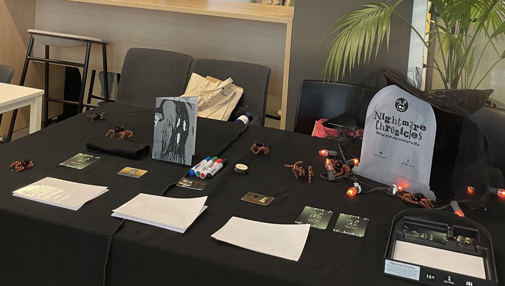
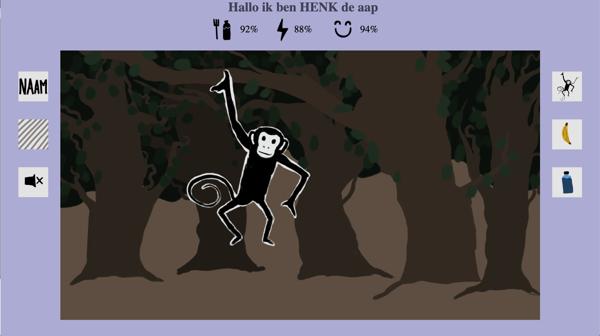
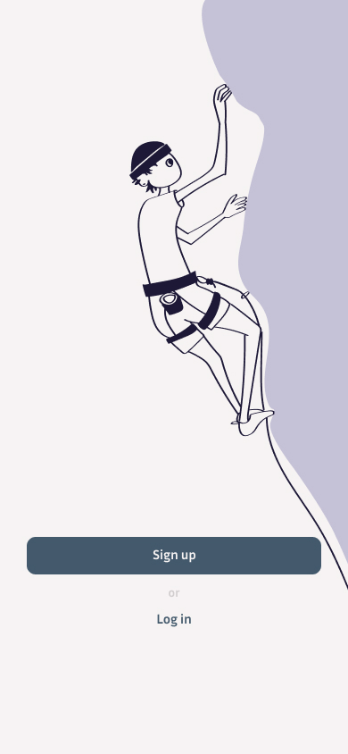
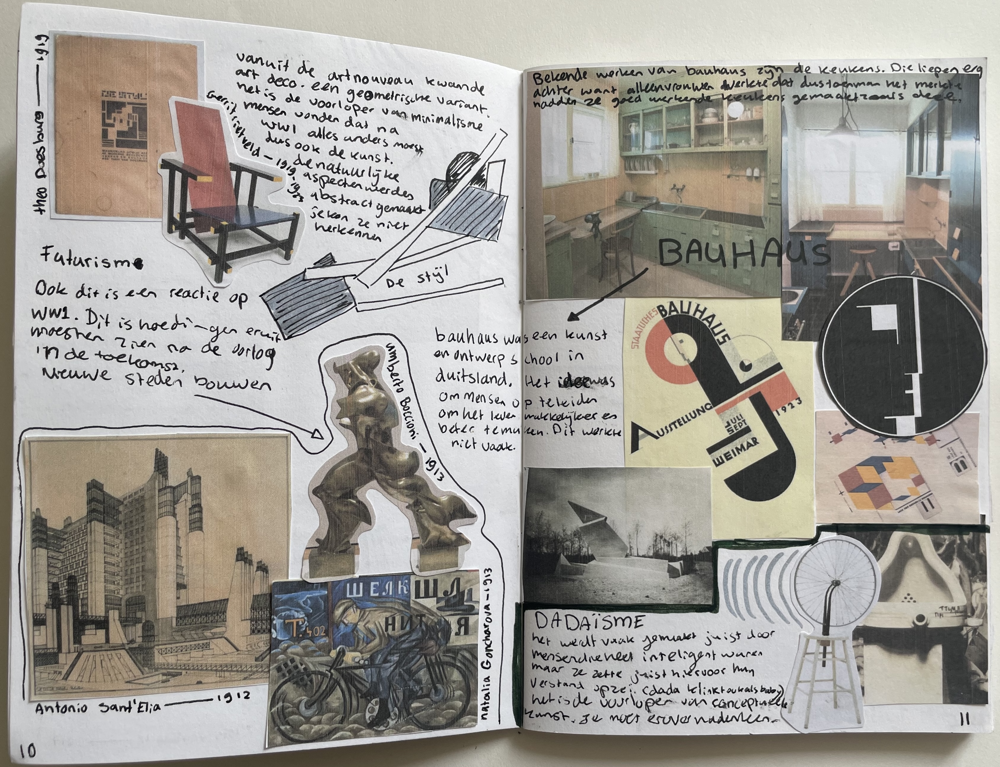

Design
Portfolio


Design
Hi! I am Loeta Aarden. I am 19 years old. I am currently studying Communication and Multimedia Design at the Hogeschool van Amsterdam. I mostly enjoy the creative part, but I am not a stranger from the technical aspects either. I love experimenting in a lot of different creative ways. I do quite a lot of art, in all different ways that interest me. Besides creating things am i a really big fan of rock climbing!
For this project I had to make an interface for a jazz festival that takes place in Rotterdam. We were given certain images, information and we had to stick to the corporate identity of gemeente Rotterdam. But we had to give the site a certain “jazz flair”. During this project I learned a lot about thinking creatively and going for different ideas instead of sticking to the first one.
The project was split up into different sections. In the different section we had to pick a song from the jazz festival and make an animation to display on the interface. This was my first time actually properly animating. I knew some concept of animating since i had done it before I really enjoyed it and learned a whole lot. We had too use the name of the song/band in the animation. This animation i made in Procreate dreams.
The animation
This was a group project based on your passion. Me and my group had the shared of drawing and playing horror/scary story video-games. We had to make a physical product. We also had to use machines like a laser cutter, sticker printer, ect. We made an board game, if you’re playing the game you’re making an story based on things you draw. We made the entire game ourselves, from thinking of the concept to cutting the wood and designing the cards. The card in the bottom right is the one i made. And the rest we all did together. In this project i learned a lot about working together and making something from scratch and how that progress goes.
This project was based on coding. we had to make an interactive game which works similar to a tamagotchi. In my game I have a monkey which name you can change. You can also change the background and if you want music to be playing or not. You have percentages of how the monkey is feeling. and can give the monkey food or exercise to get the percentages up. If one of the percentages is 0, your monkey dies. This project was the first time i coded with javascript. I learned a whole lot during this course. I also drew every illustration in this myself.
Website
Here I had to make an app to work across multiple devices. I made an climbing app that works with a phone and an smart watch. So you can plan your workouts and follow along them.
Here I had to make a better version of an app that saves statistics. I used the app “Goodreads”. We mostly focused on how to display statistics. During this I learned a lot about all the different ways to do display something. And that sometimes thinking outside the box helps with narrowing it down to the best option.


This was one of the first projects I did. We had to make a website based around sustainable projects within Amsterdam. I choose the little book library’s that can be found all around the city. You can exchange books here a give them a second life. We had to make both the design and idea all from scratch and I also coded a website.
Website
The first project I did while studying at CMD. We had to make a recipe page for a certain food. We were given a style to make the website in. I was given the style overlaying and printing. We also could use only 3 colours. But we were allowed to differ in the shading from those colours.

For this project we learned about art history. For this we had to make notes in a creative way to show what you learned. I really enjoyed doing this it helped me a lot with seeing how differently things can be placed in a blank space.
Besides all the projects I do at communication and multimedia design I do a lot of different art as well.
Want to see more of my personal art? Take a look at my art protfolio!
Art Portfolio